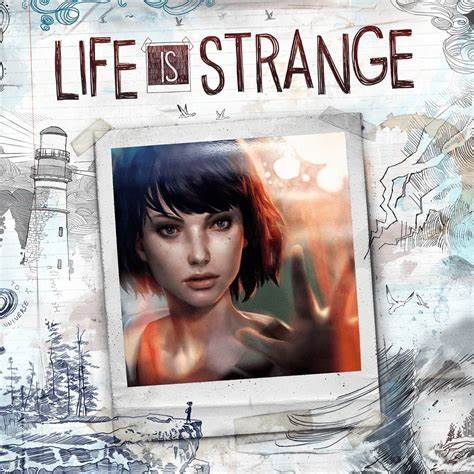

Főbb információk
A Life is Strange egy ötrészes epizódos kalandjáték, amelynek célja, hogy forradalmasítsa a történet-alapú választási és következményes játékokat. A DONTNOD Entertainment fejlesztette és a Square Enix adta ki . A fejlesztők úgy írják le a játékot, mint egy nosztalgikus, felnőtté váló sztorit, amely ötvözi a jelent a múlttal, kulcsfontosságú pillanatokat hozva létre minden epizódhoz. Az 1. epizód, a " Chrysalis ", 2015. január 29-én, az utolsó epizód, a " Polarized " pedig 2015. október 20-án jelent meg.
A történet röviden
A játék főszereplője Max Caulfield , ismertebb nevén Max, egy félénk 18 éves fotós, aki rájön, hogy képes visszatekerni az időt , és megváltoztatni az események menetét.